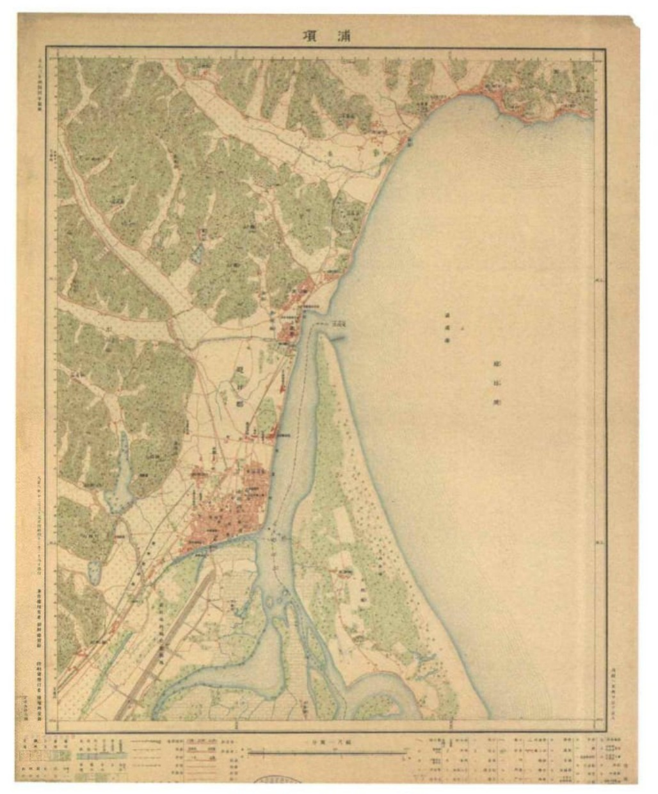
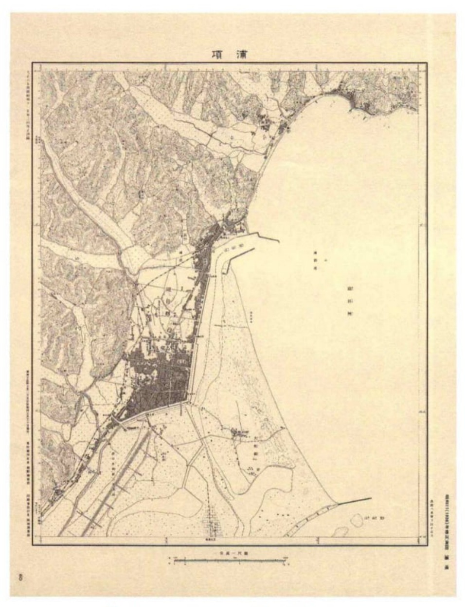

A안 · 답사 요록
포항의 항구와 원도심
흥해의 동헌에서 동빈내항의 공사와 수산업, 수도산의 물 공급, 포항의 독립운동과 전쟁까지. 건물과 물길, 신문과 사진에 남은 포항의 근현대사를 읽는다.
자료집 차례
포항의 항구와 원도심
포항의 항구와 원도심
흥해의 동헌에서 동빈내항의 공사와 수산업, 수도산의 물 공급, 포항의 독립운동과 전쟁까지. 건물과 물길, 신문과 사진에 남은 포항의 근현대사를 읽는다.
포항의 고을과 항구
고을과 항구 사이에서
오늘날 포항의 북쪽에 남은 흥해의 동헌과 동빈내항은 서로 다른 시기의 중심지다. 제남헌은 1835년에 세운 지방 관청이고, 동빈내항의 근대적인 모습은 20세기의 축항과 매립을 거치며 형성되었다. 관원이 업무를 보던 고을과 선박·상품이 모이는 항구는 농촌과 어촌의 생산물을 매개로 연결되어 있었다.
출전: 포항시, 「영일민속박물관」; 한국학중앙연구원, 「포항시」, 『한국민족문화대백과사전』
1914년 여러 고을이 영일군으로 묶인 뒤, 항구 주변의 포항면은 1931년 읍이 되었고 1949년에는 시로 분리되었다. 인구와 상업의 활동 범위가 넓어지자 도로와 물길뿐 아니라 주민에게 마실 물을 공급하는 시설도 필요해졌다. 1920년대 수도산의 배수지는 이렇게 성장한 시가지의 생활을 떠받친 시설이었다.
출전: 한국학중앙연구원, 「포항시」, 『한국민족문화대백과사전』
김진홍, 『일제의 특별한 식민지 포항』, 142~147쪽.
1935년의 기록에 남은 도시
1935년의 『포항지』에는 항만 공사와 수산업, 철도와 상수도, 상점과 관공서가 자세히 소개되어 있다. 저자는 일본인 정착과 사업 확장을 포항 발전의 중심으로 서술했다. 2020년 김진홍은 이를 번역하면서 신문기사와 다른 기록을 주해로 덧붙였다. 그 책에는 사업가의 어장과 제빙량뿐 아니라 만세운동에 나선 사람들, 흉년과 어업 부진으로 고향을 떠난 주민들의 이야기도 함께 실렸다.
김진홍, 『일제의 특별한 식민지 포항』, 6~8·162·180·450쪽.
도시의 시설에 쌓인 다른 시간
1950년에는 역과 항구, 도로와 학교가 전쟁의 공간이 되었다. 전후에는 냉동·제빙시설이 다시 어획물의 보관과 유통을 맡았고, 기능을 잃은 일부 건물은 전시와 문화활동을 위한 장소로 바뀌었다. 동빈문화창고1969는 그 과정이 남아 있는 건물이다. 포항의 근현대사는 새 시설이 낡은 시설을 밀어낸 단순한 순서보다, 같은 장소가 여러 번 다른 일을 맡은 역사에 가깝다.
출전: 손대성, 「[빈집의 재탄생] 얼음 만들던 포항 옛 냉동창고, 문화공간으로 탈바꿈」, 연합뉴스, 2026.6.14.; 대한민국역사박물관, 「포항여자중학교 전적지」, 근현대사아카이브
01. 제남헌과 영일민속박물관 — 흥해 고을의 관청과 생활
1835년에 세운 흥해군의 동헌
영일민속박물관의 제남헌은 1835년에 세운 흥해군의 동헌이다. 동헌은 지방관이 행정과 재판을 맡아보던 관청의 중심 건물이었다. 관청 전체를 뜻하는 관아와는 범위가 다르다. 관아에는 업무를 보는 공간 외에도 지방관의 살림집인 내아, 실무를 맡은 향리들의 공간 등이 있었으며, 동헌은 그 가운데 고을의 일을 처리하는 정청이었다. 제남헌의 현판과 마당에는 흥해가 하나의 독립된 고을이었던 시기의 내력이 남아 있다.
조선의 지방관은 오늘날처럼 행정·사법 업무가 여러 기관으로 나뉜 환경에서 일하지 않았다. 주민의 세금과 부역, 농사와 구휼, 호적과 분쟁이 지방관의 업무에 함께 얽혀 있었다. 농사는 개별 가구의 생계인 동시에 고을의 조세 수입과 연결되었고, 흉년은 식량 부족뿐 아니라 세금 납부와 환곡 상환의 어려움으로 번졌다. 동헌은 이처럼 마을에서 벌어진 문제가 국가의 행정과 만나는 곳이었다. 관청의 기와지붕 아래에는 고을 주민의 토지와 곡식, 가족과 생계에 관한 일이 모였다.
출전: 포항시, 「영일민속박물관」; 한국학중앙연구원, 「동헌」, 『한국민족문화대백과사전』
서로 다른 고을이 하나의 행정구역으로 묶이다
제남헌이 지어질 무렵, 오늘날 포항시의 넓은 영역은 하나의 도시가 아니었다. 흥해·연일·청하·장기에는 각각 고을의 중심이 있었고, 해안의 포구와 내륙의 마을은 저마다의 길과 장터를 이용했다. 흥해에서 포항으로 간다는 말은 같은 시 안의 동네를 오간다는 오늘날의 뜻과 달랐다. 관청이 있는 읍내로 향하는 길과 물건을 거래하러 항구의 장터로 향하는 길도 반드시 일치하지 않았다.
1914년에는 흥해·연일·청하·장기가 영일군으로 통합되었다. 뒤이어 항구 주변의 포항면은 1931년 포항읍이 되었고, 1949년 포항시로 승격하면서 영일군과 분리되었다. 다시 1995년 포항시와 영일군이 합쳐졌다. 현재의 행정지도는 이 여러 차례의 통합과 분리를 거친 결과다. 흥해의 동헌이 시가지 북쪽의 옛 건물로 남은 배경에는 건물 자체의 노후화만이 아니라 지역 행정의 중심이 재편된 과정이 있다.
그렇다고 관아가 있는 흥해와 항구가 있는 포항이 서로 단절되어 있었던 것은 아니다. 읍내와 장터에는 주변 농촌에서 생산한 곡식과 채소가 모였고, 바닷가의 어획물은 길과 시장을 거쳐 내륙으로 옮겨졌다. 행정의 경계와 물자의 이동 범위는 서로 겹치면서도 같지 않았다. 흥해의 생활은 토지와 농사에만, 포항의 생활은 바다와 어업에만 묶여 있지 않았다. 두 지역은 농산물과 수산물의 교환을 통해 이어졌다.
출전: 한국학중앙연구원, 「포항시」, 『한국민족문화대백과사전』; 한국문화원연합회, 「가장 궁금한 포항지명 ‘나루끝’」
생산한 것을 보관하고 옮기는 일
영일민속박물관은 지역의 의식주와 농어업에 쓰인 생활자료를 모은 곳이다. 이 물건들의 공통점은 일상에서 반복되는 일을 위해 만들어졌다는 데 있다. 곡식을 담는 용기는 수확이 끝난 뒤의 시간을 견뎌야 했고, 어구는 바다의 조건과 잡으려는 물고기에 맞아야 했다. 물건의 크기와 재료에는 사용자의 손길뿐 아니라 생산물의 성질, 보관 장소, 운반 수단의 제약이 함께 담겼다.
식량을 얻는 일은 수확이나 어획으로 끝나지 않는다. 곡식은 말리고 저장하며 필요할 때 꺼내야 하고, 생선은 쉽게 상하므로 빠르게 팔거나 말리고 염장하는 등 별도의 처리가 필요하다. 저장과 가공은 생산 시기와 소비 시기가 어긋나는 문제를 해결하는 일이었다. 한꺼번에 많이 얻은 것을 나누어 쓰거나 다른 지역에 보내려면 용기와 포장, 보관 장소와 운반 인력이 뒤따라야 했다. 생활도구는 이러한 일을 감당했던 작은 규모의 기술이다.
근대의 항구에서는 같은 문제가 훨씬 큰 규모로 나타났다. 김진홍이 수록한 『경북산업지』의 포항 관련 기록에는 영일만의 청어가 부산이나 대구를 거쳐 서울·개성·평양으로 이동하고, 부조와 경주의 시장에서도 소비되었다는 내용이 있다. 포항의 물고기가 포항에서만 소비되지 않았던 것이다. 멀리 보내는 양이 늘어날수록 신선도를 유지할 시간과 교통편이 중요해졌고, 제빙과 냉동, 철도와 기선이 서로 연결되었다.
김진홍, 『일제의 특별한 식민지 포항』, 479~480쪽.
농어촌의 도구와 근대적인 설비는 오랫동안 함께 사용되었다. 기차가 다닌다고 지게가 즉시 사라지는 것은 아니며, 대형 냉동시설이 생겨도 집과 시장에서 물건을 담고 나르는 용기는 계속 필요했다. 장거리 운송은 철도나 선박이 맡아도 생산지에서 역과 선창까지, 다시 가게와 집까지 옮기는 일은 남았다. 산업의 변화는 새로운 기계 하나가 모든 옛 도구를 대신하는 모습보다 여러 수단이 연결되는 모습에 가까웠다.
관청에 모인 지역 주민의 물건
1983년 10월 29일, 제남헌을 수리한 공간에 영일민속박물관이 문을 열었다. 포항시의 설명에 따르면 지역 주민의 뜻을 모아 포항시와 포항문화원이 민속자료를 수집했다. 관원이 업무를 보던 곳에 주민들이 사용하던 물건이 들어온 셈이다. 건물의 쓰임은 행정에서 전시와 보존으로 바뀌었지만, 지역의 생활과 관계를 맺는 장소라는 성격은 다른 방식으로 이어졌다.
박물관에 들어간 도구는 사용하던 자리에서 떨어져 나와 이름과 용도를 설명하는 전시품이 되었다. 쓰임이 줄어든 물건을 모으는 일은 사람들이 무엇을 잃어가고 있다고 느꼈는지와도 관련된다. 급격한 산업화와 생활 변화 속에서 지역의 옛 도구를 수집하고 관아를 보존한 1983년의 선택 역시 이 장소의 역사에 포함된다. 제남헌에는 19세기 흥해의 행정과 20세기 주민들의 생활 기억이 함께 남아 있다.
제남헌의 역사는 오래된 관청 한 채의 연혁을 넘어선다. 고을마다 행정 중심을 두었던 시기, 항구의 성장이 주변 생활권을 끌어당기던 시기, 여러 지역이 포항이라는 도시 안에서 다시 묶인 시기가 이 건물의 바깥을 지나갔다. 그동안 사람들은 논밭과 바다에서 생산하고, 저장하고, 시장으로 옮겼다. 동헌과 생활도구를 함께 보존한 박물관은 제도와 생계가 떨어져 있지 않았던 지역사회의 모습을 전한다.
02. 나루끝과 북부시장 — 물길과 장터가 만나는 곳
나루가 사라진 뒤에도 남은 이름
나루끝이라는 지명은 배를 타고 건너던 장소의 기억을 담고 있다. 한국문화원연합회가 소개한 포항의 지명 이야기에는 여을천과 나루끝, 그리고 흥해·청하·월포 사람들이 쓰던 ‘포항 간다’는 말이 함께 나온다. 오늘날에는 모두 포항시에 속하지만, 당시 생활 속의 포항은 장을 보거나 일을 보러 찾아가는 별도의 목적지였다. 지명에는 행정지도보다 오래 이어진 사람들의 이동 방향이 남아 있다.
나루는 단순히 강가의 빈터가 아니었다. 육로가 물길에 막히는 지점에서 사람과 짐을 건네는 교통시설이었다. 강을 건너기 위해 잠시 멈춘 사람들, 건너편에서 들어오는 물건, 이를 기다리는 장사와 운반의 일이 한곳에서 만났다. 나루를 사이에 두고 양쪽 지역이 연결되었으므로, 도하 장소는 주변 길의 방향과 사람들의 왕래에도 영향을 미쳤다. 다리가 놓이거나 물길이 달라진 뒤에는 나루의 기능이 줄어들어도 그곳으로 향하던 길과 이름이 남을 수 있었다.
출전: 한국문화원연합회, 「가장 궁금한 포항지명 ‘나루끝’」
바뀌는 해안선과 길
포항의 옛 시가지는 형산강 하구와 바다 사이에 형성되었다. 강이 운반한 모래와 흙은 하구에 쌓였고, 범람 때마다 배가 드나드는 물길의 조건도 달라졌다. 지금 육지인 곳을 과거에도 같은 도로와 필지가 차지했던 것은 아니다. 『일제의 특별한 식민지 포항』에 실린 1917년 지도와 1936년 무렵의 지도에는 오늘과 다른 해안선과 물길, 당시 시가지의 범위가 나타난다.
두 지도 사이에는 축항과 매립이 진행된 시간이 놓여 있다. 배가 들어오는 수로를 정비하는 일과 물가를 메워 새로운 도로를 만드는 일이 함께 도시의 모양을 바꾸었다. 나루가 담당하던 연결을 도로와 교량이 대신하면 장터로 들어오는 경로도 달라질 수밖에 없다. 나루끝은 사라진 교통시설의 이름이면서 물길을 끼고 성장한 포항의 지형을 설명하는 말이다. 현재 북부시장의 경계와 조선 후기 포항장의 경계가 그대로 일치하는 것은 아니지만, 이 일대에는 바다와 내륙 사이의 왕래가 누적되어 있다.
김진홍, 『일제의 특별한 식민지 포항』, 96·98~106쪽.
시장에 모이는 여러 지역의 생산물
포항의 어획물은 해안 마을만을 위한 식량이 아니었다. 『경북산업지』에 소개된 포항에서는 청어가 대구와 부산을 거쳐 더 먼 시장으로 보내졌고, 가까운 부조와 경주에서도 소비되었다. 해안의 어장, 선창, 장터, 철도역이 하나의 유통 과정에 참여했다. 수산물은 바다에서 잡혔지만, 상품으로 팔리는 범위는 내륙 교통과 시장의 수요에 따라 넓어졌다.
시장의 일에는 물건을 사고파는 순간보다 긴 시간이 필요했다. 어획물을 선별하고 나누어 담는 일, 운반 중 손상과 부패를 줄이는 일, 도착한 물건을 다시 소매할 크기로 나누는 일이 거래의 앞뒤에 붙었다. 농산물 역시 산지에서 소비자의 집까지 여러 손을 거쳤다. 시장 주변에는 점포뿐 아니라 물건을 잠시 쌓아둘 공간과 짐을 내릴 길이 필요했다. 항구도시의 상업은 배의 크기나 상점 수만으로 이루어진 것이 아니라 이러한 반복적인 작업으로 유지되었다.
상품마다 움직이는 속도도 달랐다. 곡식과 마른 물건은 비교적 오래 보관할 수 있지만, 선어는 시간이 지나면 상품 가치가 빠르게 떨어진다. 같은 거리를 옮겨도 얼음의 유무, 배와 기차가 출발하는 시각, 도착지에서 다시 운반할 수단이 거래 결과를 바꾸었다. 시장과 항구가 가까운 것은 단순히 편리한 배치가 아니라, 상품의 시간을 줄이는 조건이기도 했다.
김진홍, 『일제의 특별한 식민지 포항』, 479~480쪽.
식민지기의 상점과 거리
일제강점기에는 일본인 이주와 상업·수산업 자본의 진출이 포항 시가지의 성격을 바꾸었다. 김진홍의 책에 수록된 거리 사진에는 도로를 따라 늘어선 점포와 간판, 목조 건물의 전면이 보인다. 상점은 길을 향해 상품과 이름을 드러냈고, 길은 사람과 짐을 점포 앞으로 끌어들였다. 주거와 영업이 가까이 놓인 거리에서는 생활공간과 거래공간의 구분도 오늘날의 대형 상업시설과 달랐다.
항구 주변의 일본인 사업가들은 어업·가공·운반 등 여러 업종에 걸쳐 활동했다. 하마다 이와의 경우 어장을 운영하는 데서 그치지 않고 제빙과 유지업에도 관여했다. 잡은 물고기를 처리하고 보관하는 설비를 함께 갖추면 생산과 판매 사이의 연결을 더 넓게 장악할 수 있었다. 상업의 변화는 상점 간판이 바뀌는 데 그치지 않고, 생산물의 취급과 자본 조달, 거래처의 범위가 바뀌는 일이었다.
그 거리에는 조선인 주민의 소비와 노동도 있었다. 일본인 소유의 사업체와 조선인 생활공간을 완전히 나뉜 두 세계로 설명하기 어려운 까닭이다. 물건을 사는 사람, 가게를 소유한 사람, 짐을 나르는 사람은 서로 다를 수 있었다. 식민지 도시의 불균등한 관계는 이러한 접촉 속에서 작동했다. 『포항지』가 자세히 소개한 사업가의 성공과 도시 주민의 생활이 언제나 같은 방향으로 움직인 것은 아니었다. 같은 책의 포항역 주해에는 흉년과 어업 부진으로 고향을 떠나는 사람들의 기록도 실려 있다.
김진홍, 『일제의 특별한 식민지 포항』, 22~24·180·450쪽.
교통이 바꾸어 놓은 장터의 자리
나루와 시장을 연결했던 길은 항만 정비와 철도, 자동차 교통이 더해지며 다른 규모의 교통망에 들어갔다. 강을 건너는 데 필요한 시설, 선창에 짐을 내리는 방식, 장거리 운반을 맡는 수단이 바뀌면 시장의 활동 범위도 변했다. 근처 마을의 생산물을 교환하던 관계 위에 다른 지방과 일본으로 이어지는 거래가 겹쳐졌다. 지역 시장은 더 넓은 경제와 연결되었지만 그 과정에서 기존 운반과 장사의 일이 모두 사라진 것은 아니었다.
나루끝이라는 이름이 전하는 것은 멈춰 있는 옛 풍경이 아니다. 강을 건너던 길이 바뀌고, 항구가 정비되고, 시장의 범위와 물건의 이동 거리가 달라진 역사다. 포항의 성장은 내륙과 해안이 따로 발전한 결과가 아니라 그 사이의 연결이 촘촘해진 과정이었다. 오늘의 시장 주변에 남은 옛 지명은 그 연결이 물길과 나루에서 시작되었음을 알려준다.
03. 동빈내항과 매립 — 물길을 고치고 땅을 만들다
배가 들어와도 머물기 어려웠던 하구
포항의 옛 항구에서는 배를 맞아들이기 전에 물길을 유지하는 일이 필요했다. 『포항지』는 형산강이 범람할 때마다 하구에 토사가 쌓여 배의 출입이 어려워졌다고 기록한다. 바다와 이어진 입구가 있다고 해서 언제나 항구로 쓸 수 있었던 것은 아니다. 배 밑바닥이 물에 잠기는 깊이인 흘수보다 수심이 얕아지면, 배는 항구에 접근하지 못하거나 물이 차오르기를 기다려야 했다.
배의 크기에 따라 이용하는 바다도 달랐다. 김진홍이 수록한 『경북산업지』의 설명에서는 작은 어선들이 형산강 북하구에 정박한 반면, 흘수가 큰 운반선은 얕은 물 때문에 두호동 앞바다에 머물렀다. 어장과 시장이 가까워도 모든 배가 같은 선창까지 들어오지는 못했던 것이다. 어획물을 모으고 옮기는 일에는 항구 안과 바깥을 잇는 추가 작업이 필요했다.
김진홍, 『일제의 특별한 식민지 포항』, 99~100·480쪽.
모래와 파도를 다루는 서로 다른 공사
하구에 쌓인 흙과 모래를 걷어내는 준설은 배가 지날 수심을 되찾는 작업이다. 그러나 토사가 계속 들어오면 준설만으로 문제가 끝나지 않았다. 물의 흐름을 일정한 방향으로 이끄는 도수제와 모래의 유입을 조절하는 방사제, 물가의 땅을 지키는 호안이 서로 다른 역할을 맡았다. 항구를 고치는 일은 바닷가를 단단한 벽으로 둘러싸는 한 가지 공정이 아니라 물과 토사의 움직임을 다루는 여러 작업의 결합이었다.
포항에서는 1914~1915년에 제한적인 방사제 공사가 이루어졌고, 1919년 이후에는 형산강 하구의 도수제 공사가 이어졌다. 1921~1923년에도 보강이 계속되었다. 공사는 한 번의 준공으로 끝나는 사건이 아니었다. 이용하는 배가 늘고 수심과 흐름이 바뀌면 다시 손을 보아야 했으며, 비용과 인력도 반복해서 들어갔다. 항구의 기능은 시설을 세운 뒤에도 이를 유지하는 일에 달려 있었다.
1923년 4월의 폭풍우는 피항시설의 한계를 드러냈다. 성어기를 맞아 조업하던 배들이 하구로 피했지만 높은 파도와 범람으로 피해를 입었다. 『포항지』는 이 재해 이후 포항항의 정비 필요성이 더 크게 제기되었다고 서술한다. 많이 잡고 빨리 운반하는 능력과 배를 안전하게 머물게 하는 능력은 따로 확보되어야 했다. 어업의 규모가 커질수록 안전한 항구에 대한 요구도 커졌다.
김진홍, 『일제의 특별한 식민지 포항』, 99~103쪽.
동빈 매립의 신청과 완공
항구에 수심을 확보하는 일과 물가를 메워 땅을 만드는 일은 방향이 반대처럼 보이지만, 근대 항만에서는 함께 진행되었다. 선박이 다니는 수로는 열어두고 그 옆에 짐을 내릴 선창과 도로, 창고와 상업지를 마련해야 했기 때문이다. 동빈 매립도 배의 접안과 육지의 시가지 조성을 함께 겨냥한 사업이었다.
『포항지』에 실린 매립 신청서는 1930년 5월 22일자로 작성되었다. 신청 목적에는 잔교와 도로, 배수시설, 시가지 조성이 포함되어 있었다. 그해 11월 17일 허가가 내려졌고 공사는 1932년 4월 13일 완공되었다. 1931년 포항면이 읍으로 바뀐 시기를 사이에 두고 허가와 시공, 토지 처분이 이어진 것이다. 새 시가지는 바다가 저절로 물러난 자리에 생긴 것이 아니라 행정 절차와 토목공사를 거쳐 만들어졌다.
사업비는 6만 6,200원으로 기록되어 있다. 읍은 공사 뒤 얻은 토지를 분양해 비용을 충당하려 했다. 땅의 가격을 심사하고 공매를 진행하는 절차가 뒤따랐다. 여기서 매립지는 물리적인 땅인 동시에 읍의 재정과 연결된 자산이었다. 공사비를 어떻게 마련하는가, 도로와 공공시설 부지를 어디에 두는가, 나머지 토지를 누구에게 어떤 값에 넘기는가가 모두 도시의 모습을 결정하는 일이었다.
김진홍, 『일제의 특별한 식민지 포항』, 104~106쪽.
지도가 보여주는 새 시가지
1917년 지도에는 형산강 하구와 송도 일대의 지형, 해안을 따라 형성된 포항의 시가지가 나타난다. 1936년 무렵의 지도에서는 그사이 달라진 수로와 시가지의 범위를 볼 수 있다. 도로의 선이 늘고 물가의 윤곽이 바뀐 것은 항구 공사의 결과가 육지의 생활공간으로 이어졌다는 뜻이다. 두 지도는 서로 다른 시기의 포항이 같은 자연 지형을 어떻게 이용했는지 보여준다.
사료도판 1. 1917년 포항 지도

사료도판 2. 1936년 무렵 포항 시내 지도

새로운 땅에는 건물만 들어선 것이 아니었다. 길과 배수로, 짐을 다룰 공간, 사람들이 이동할 통로가 함께 필요했다. 항구에서 내린 물건이 창고로 들어가고 다시 시장이나 역으로 나가려면 바다와 육지의 작업 순서가 이어져야 했다. 도시의 확장은 집을 지을 면적의 증가이면서 상품을 움직이는 공간의 재편이었다. 물가의 선을 바꾸는 공사가 시가지 안의 길과 거래까지 바꾼 이유다.
한편 『포항지』는 이 공사를 지역 유력자들의 노력과 포항의 번영이라는 틀에서 설명했다. 매립지의 분양과 읍 재정의 성과는 자세하지만, 그 땅에서 일한 사람들의 임금과 생활은 같은 밀도로 기록되지 않았다. 김진홍이 이 기록에 다른 신문기사와 주해를 덧붙인 까닭도 여기에 있다. 공사가 남긴 도로와 항구는 눈에 보이지만, 그 시설에 관계된 사람들의 경험은 서로 다른 기록에 흩어져 있다.
김진홍, 『일제의 특별한 식민지 포항』, 6~8·104~106쪽.
자연 하구에서 항만도시로
동빈내항의 역사는 자연을 완전히 제거한 도시의 역사가 아니다. 토사와 파도, 수심과 홍수는 공사 뒤에도 항만 이용을 제한했다. 사람들은 제방을 쌓고 물길을 고쳤지만, 항구의 운용은 계속 자연조건과 맞물렸다. 포항의 도시화에는 땅을 넓히는 적극적인 개입과 그 시설을 지키기 위한 반복적인 관리가 함께 들어 있다.
오늘 남은 내항의 물가와 도로는 어선과 운반선의 차이, 어획물의 유통, 재해와 복구, 토지의 분양이 겹쳐 만들어진 공간이다. 항구는 바다의 일을 육지의 경제로 바꾸는 접점이었다. 배가 들어올 수 있도록 만든 수로와 물건을 내리기 위해 만든 땅이 맞물리며, 포항의 상업과 시가지도 함께 성장했다.
04. 수산업과 하마다 이와 — 어장, 얼음, 운반의 연결
어획물 뒤에 이어지는 산업
영일만의 물고기가 시장의 상품이 되기까지는 잡는 일 뒤에 여러 과정이 따랐다. 배에서 내려 종류와 크기에 따라 나누고, 보관하거나 가공한 뒤 다른 지역으로 보내야 했다. 많이 잡은 날일수록 이를 처리할 시설과 운반편이 더 필요했다. 바다에서의 어획 능력과 육지에서의 처리 능력이 맞지 않으면 어획량이 늘어도 판매할 기회를 놓칠 수 있었다.
『포항지』가 소개하는 1930년대의 수산업에는 어장과 어선만이 아니라 제빙과 유지업이 함께 등장한다. 생선을 차갑게 보관하는 일과 물고기에서 기름을 얻는 일은 서로 다른 제품을 만들었지만, 모두 어획물을 시장에 연결하는 산업이었다. 항구 주변에 작업장과 창고가 모인 까닭은 이 시설들이 같은 원료와 운송 공간을 이용했기 때문이다. 수산업은 바다의 조업과 육지의 가공이 이어진 생산 체계였다.
김진홍, 『일제의 특별한 식민지 포항』, 263~266·450쪽.
1914년에 들어온 일본인 어업가
하마다 이와는 1914년 12월 조선에 들어와 동해면에서 어업에 종사했다. 『포항지』의 인물 소개는 그가 청어 어업에서 성과를 거두고 사업을 넓혔다고 서술한다. 1935년의 기록에 따르면 그의 어장은 영일만 안에 20곳, 강구 연안에 8곳, 감포 연안에 2곳으로 모두 30곳이었다. 한 포구의 배 한 척을 운영하는 규모를 넘어 동해안 여러 어장에 기반을 둔 사업이었다.
이 기록은 하마다의 어획 수입을 연간 약 20만 원으로 소개한다. 이는 어획의 금액을 나타내는 서술이지 모든 경비를 뺀 순이익을 뜻하는 수치는 아니다. 어장을 유지하려면 배와 어구, 인력, 수리와 운반 비용이 들었다. 하마다의 사업 규모가 컸다는 사실은 분명하지만, 수입액 하나에 그 일을 가능하게 한 여러 비용과 노동이 모두 드러나는 것은 아니다.
어장의 분포는 포항 수산업의 공간을 보여준다. 본거지의 항구와 실제 조업하는 바다는 같은 범위가 아니었다. 어장이 여러 연안에 흩어지면 배의 이동, 어구의 보급, 어획물의 회수와 판매를 연결해야 했다. 항구는 가까운 어장에서 잡은 물고기만 받는 곳이 아니라 여러 지역의 생산을 모으고 분배하는 중심으로 기능했다.
그물이 달라지면 조업도 달라진다
청어와 고등어를 잡는 방식은 고정되어 있지 않았다. 김진홍의 책에 수록된 어업 설명에는 일정한 장소에 그물을 설치하는 정치망과 물고기 떼를 둘러싸는 건착망, 물에 흘려 보내는 유망, 긴 줄에 여러 낚싯바늘을 다는 연승어업이 나온다. 그물의 크기만 달라지는 것이 아니라 물고기를 기다리는지, 떼를 찾아 이동하는지, 어떤 배와 인력이 필요한지가 함께 달라졌다.
건착망은 물고기 떼의 둘레에 그물을 두른 뒤 아래쪽을 죄어 빠져나가지 못하게 하는 방식이다. 움직이는 어군을 따라가려면 배의 기동성과 여러 작업자의 협력이 중요했다. 『포항지』는 고등어 어업에서 범선을 이용하던 방식이 기선건착망과 발동기선 중심으로 바뀌어 간 과정을 설명한다. 청어 어업에서도 그물의 형식과 재료가 달라졌으며, 조선인 어업자들이 면사망을 사용하게 된 사정이 기록되어 있다.
이 변화는 누구에게나 같은 조건에서 이루어지지 않았다. 동력선과 새 어구를 마련할 자본이 있는 사업자와 작은 배로 조업하는 어업자의 대응 능력은 달랐다. 책에는 새로운 어법의 발달과 함께 영세한 어업자가 위협을 받았다는 서술도 나온다. 더 많이 잡는 기술이 곧 모든 어민의 안정된 생활을 뜻하지는 않았던 것이다. 조업 방식의 경쟁은 어장을 둘러싼 이해관계와 연결되었다.
김진홍, 『일제의 특별한 식민지 포항』, 263~266쪽.
하루 열 톤의 얼음
하마다의 사업 소개에서 눈에 띄는 또 하나의 수치는 제빙량이다. 『포항지』는 하루 10톤, 연간 2,500톤의 얼음을 생산했다고 기록한다. 얼음은 물고기와 별개의 상품이면서 선어의 판매를 뒷받침하는 자재였다. 배와 육상의 보관 과정에 얼음을 공급할 수 있으면 어획물을 처리할 시간이 늘고, 먼 시장까지 운반할 가능성도 커졌다.
얼음이 녹을 때 주변의 열을 흡수하는 성질은 생선의 온도를 낮게 유지하는 데 쓰인다. 어획물을 얼음과 함께 두는 것은 단순히 상자에 물건을 채우는 일이 아니라 부패가 진행되는 속도를 늦추는 일이었다. 얼음을 만드는 곳, 이를 잘게 부수는 곳, 배에 싣는 곳이 효율적으로 이어질수록 공급에 드는 시간과 수고를 줄일 수 있었다. 제빙설비의 입지는 항구의 작업 동선과 밀접했다.
어장과 제빙시설을 함께 운영하는 사업자는 어획에서 보관까지 여러 단계를 연결할 수 있었다. 항구의 상업은 물고기를 잡는 사람과 파는 사람의 단순한 교환보다 복잡했다. 원료를 모으고 가공하며 운송하는 여러 단계에 자본이 들어갔고, 같은 사업가가 둘 이상의 단계에 관여하기도 했다. 포항 수산업의 규모 확대는 배가 커지는 것과 함께 이러한 사업의 결합으로 진행되었다.
사업가를 기리는 기록과 항구의 사람들
『포항지』는 하마다를 높이 평가하고 그의 사업을 ‘왕국’에 견주는 표현을 썼다. 주변 업자들이 송덕비를 세웠다는 내용도 소개한다. 이러한 서술은 당시 일본인 사회가 성공한 사업가를 어떻게 기념했는지 보여준다. 김진홍은 책의 서문에서 『포항지』가 일본인 정착과 개발의 성과를 강조한 기록이라는 점을 설명한다. 사업의 규모와 사업가에 대한 찬양은 같은 문단 안에 함께 들어 있다.
반면 선창에서 생선을 분류한 사람, 그물을 손질한 사람, 얼음을 옮긴 사람의 이름은 그만큼 자세히 남아 있지 않다. 대규모 사업은 이들의 반복적인 작업 없이는 유지될 수 없었다. 항구의 창고와 제빙시설은 자본의 흔적이면서 노동이 이어진 장소였다. 물고기가 시장에 도착하는 과정에는 이름이 기록된 사업가뿐 아니라 기록이 드문 수많은 일의 담당자가 있었다.
해방 뒤 일본인이 남긴 재산은 ‘적산’이라는 이름으로 처리되었다. 이 말은 해방 이후의 재산 관계를 가리키므로, 목조의 일본식 집이라는 건축 양식과 같은 뜻은 아니다. 항구에 남은 건물은 식민지기의 영업과 거주, 해방 이후의 소유 변화, 전후의 사용을 거치며 내력이 쌓였다. 수산업의 역사는 한 사업가의 활동에서 시작해도 어장과 공장, 집과 거리로 이어진다.
05. 동빈문화창고1969 — 배에 실리던 얼음
1969년의 냉동창고
동빈문화창고1969는 포항수협이 1969년에 세운 냉동시설에서 출발했다. 동빈내항을 끼고 있는 이 건물은 배가 드나드는 항구 가까이에서 수산물을 보관하고 얼음을 공급하던 시설이었다. 현재 문화공간의 이름에 남아 있는 1969는 일제강점기가 아니라 한국전쟁 이후 포항의 수산업이 이어지던 시기를 가리킨다. 식민지기에 시작된 제빙업의 역사와 전후에 세운 이 건물의 연혁은 그렇게 연결된다.
항구에 냉동창고가 필요한 이유는 바다의 생산과 시장의 소비가 같은 속도로 움직이지 않기 때문이다. 조업을 마친 배가 한꺼번에 돌아오더라도 소비자가 그날 잡은 물고기를 모두 같은 날 사는 것은 아니다. 저장시설은 도착한 어획물과 판매 사이에 시간을 마련했다. 특히 어획량의 변화가 큰 수산업에서는 보관 능력이 거래의 조건을 바꾸었다. 냉동창고는 항구의 생산물을 다음 운송과 판매로 넘겨주는 중간 공간이었다.
출전: 손대성, 「[빈집의 재탄생] 얼음 만들던 포항 옛 냉동창고, 문화공간으로 탈바꿈」, 연합뉴스, 2026.6.14.
차갑게 저장하는 일과 얼음을 공급하는 일
냉동과 제빙은 모두 낮은 온도를 이용하지만, 하는 일은 다르다. 냉동창고는 일정한 공간의 온도를 유지해 수산물을 보관한다. 제빙시설은 물을 얼려 운반할 수 있는 얼음을 만든다. 냉동실은 건물 안에 있지만 얼음은 배에 실려 바다로 나갈 수 있다. 육지의 기계가 만든 냉각의 효과를 배까지 옮기는 셈이다.
어선은 잡은 물고기를 귀항할 때까지 보관해야 했다. 조업이 길어지거나 먼바다까지 나갈수록 어획 후의 보관 시간이 늘었다. 선어를 좋은 상태로 항구에 가져오려면 조업을 시작하기 전에 얼음을 마련하는 일이 필요했다. 따라서 제빙시설에서 배로 이어지는 공급은 이미 잡아 온 물고기를 처리하는 작업과 더불어 다음 조업을 준비하는 작업이기도 했다.
포항의 제빙업은 1969년보다 앞선 기록에서도 확인된다. 1935년 『포항지』는 하마다 이와의 사업을 설명하며 하루 10톤의 얼음 생산을 소개한다. 당시의 사업체와 1969년 수협 시설을 같은 기업으로 볼 수는 없지만, 선어 유통에서 얼음이 중요했다는 공통점은 분명하다. 배와 어구가 달라지고 운영 주체가 바뀌는 동안에도 차갑게 보관하고 빠르게 운반해야 한다는 과제는 계속되었다.
송빙교와 쇄빙탑
건물에 남은 송빙교와 쇄빙탑은 얼음이 배에 실리던 과정을 보여준다. 송빙교는 얼음을 옮기는 통로였고, 쇄빙탑은 얼음을 잘게 부수어 공급하던 시설이었다. 이 두 설비는 벽과 지붕만으로는 드러나지 않는 창고의 역할을 알려준다. 얼음은 만들어진 뒤 그대로 머물지 않고 일정한 경로를 따라 이동했고, 배에 실리기 적합한 상태로 처리되었다.
큰 얼음덩어리는 보관과 이송에 유리할 수 있지만, 생선 사이를 채우거나 선창에 넣으려면 더 작은 조각이 필요하다. 쇄빙은 얼음의 크기를 바꾸어 사용하는 장소에 맞추는 과정이었다. 송빙시설은 이 물량을 반복해서 옮기는 일을 맡았다. 생산·이송·분쇄·선적이 연결되어야 냉각시설이 항구의 조업을 뒷받침할 수 있었다.
이런 설비는 항구의 배치와도 떨어질 수 없다. 얼음을 만든 곳과 배를 대는 곳이 멀수록 운반 시간이 늘고 그동안 녹는 양도 많아진다. 물가에 가까운 위치와 공급 통로는 설비 자체의 성능만큼 중요했다. 건물 바깥으로 이어진 구조물은 창고의 일이 실내에서 끝나지 않았음을 보여준다. 건물과 선창을 하나의 작업장처럼 연결하는 기능이 있었다.
출전: 손대성, 「[빈집의 재탄생] 얼음 만들던 포항 옛 냉동창고, 문화공간으로 탈바꿈」, 연합뉴스, 2026.6.14.
작업을 멈춘 건물의 다음 쓰임
2018년 제빙 등 관련 시설이 옮겨 간 뒤 이 건물은 이전의 산업적 기능을 잃었다. 냉동창고의 크기와 설비는 과거에는 작업을 가능하게 한 조건이었지만, 쓰임이 사라지자 새로운 용도를 찾기 위한 조건이 되었다. 항구의 한복판에 남은 건물을 철거할지, 고쳐 사용할지에 따라 도시가 간직하는 흔적도 달라질 수밖에 없었다.
이 건물은 수리를 거쳐 2025년 12월 동빈문화창고1969로 다시 문을 열었다. 작품을 전시하고 사람들이 머무는 문화공간이 되었지만, 송빙교와 쇄빙탑 등 과거 설비의 흔적도 남겼다. 현재의 이용은 오래된 기능을 그대로 재현한 것이 아니다. 생선과 얼음을 다루던 건물의 형태를 유지하면서 사람을 맞는 용도로 바꾼 것이다.
출전: 손대성, 「[빈집의 재탄생] 얼음 만들던 포항 옛 냉동창고, 문화공간으로 탈바꿈」, 연합뉴스, 2026.6.14.
창고에서는 넓은 공간을 효율적으로 쓰는 일이 중요했고, 전시장에서는 사람이 움직이며 대상을 볼 수 있는 환경이 중요하다. 같은 건물에서도 통로와 조명, 출입과 머무는 방식이 달라진다. 산업시설을 고쳐 쓰는 작업에는 남길 구조와 바꿀 부분을 고르는 판단이 들어간다. 이곳에서 과거는 박제된 상태로만 남은 것이 아니라 새 용도와 함께 사용되고 있다.
항구의 한 세기를 잇는 시설
동빈문화창고는 포항을 제철산업 하나로만 기억할 때 보이지 않는 전후의 경제를 보여준다. 어선의 조업과 시장의 거래, 수산물의 보관과 운반도 도시의 생활을 유지했다. 항구가 산업시설을 필요로 했던 시기와 그 시설을 문화공간으로 전환한 시기는 서로 다른 도시의 필요를 드러낸다. 건물에 붙은 이름은 새 출발을 알리면서도 세워진 해를 지우지 않았다.
기계로 얼음을 만들던 건물 안에 지금 다른 활동이 들어왔다고 해서 과거 노동이 곧바로 눈에 보이는 것은 아니다. 그러나 남은 설비의 구조를 따라가면 얼음이 어디로 움직였는지, 배와 건물이 어떻게 연결되었는지를 알 수 있다. 송빙교와 쇄빙탑은 추상적인 ‘산업화’ 대신 얼음을 옮기고 부수어 실었던 구체적인 일을 전한다. 이곳의 역사에는 물고기를 다루던 항구와 그 항구의 시설을 다시 사용하는 도시가 함께 있다.
출전: 손대성, 「[빈집의 재탄생] 얼음 만들던 포항 옛 냉동창고, 문화공간으로 탈바꿈」, 연합뉴스, 2026.6.14.
06. 수도산 배수지 — 포항 시가지에 물을 보내다
항구의 성장과 식수 문제
포항의 시가지가 커지면서 물을 구하는 일이 중요한 현안이 되었다. 『포항지』는 모래와 자갈이 많은 지형과 음용수의 어려움을 설명하며, 상수도와 항만 정비를 주민들이 오래 바라던 사업으로 소개한다. 바닷가에 물이 넉넉하게 보인다고 해서 마실 물까지 쉽게 얻을 수 있는 것은 아니었다. 사람이 늘고 상점과 관공서가 모이자 개별적으로 물을 구하던 방식만으로는 도시의 수요에 대응하기 어려워졌다.
상수도는 물을 끌어오는 관 하나를 놓는 사업이 아니었다. 수원을 정하고 물을 모아 처리한 뒤 저장시설과 관로를 통해 시가지에 공급해야 했다. 어느 곳에서 얼마나 물을 얻을 수 있는지, 건물과 도로가 있는 곳까지 어떤 경로로 보낼지가 함께 결정되어야 했다. 물을 마시는 장소와 물을 확보하는 장소가 떨어져 있는 도시에서는 여러 시설이 하나의 계통으로 움직여야 했다.
김진홍, 『일제의 특별한 식민지 포항』, 142~144쪽.
1922년의 간담회
상수도 계획은 1920년 무렵 추진되었으나 재정 문제로 중단되었다. 다시 사업이 구체화된 것은 1922년이었다. 『포항지』에는 그해 5월 16일 열린 간담회의 내용이 실려 있다. 군청 관계자와 면의 책임자, 협의회원들이 모여 사업 추진과 비용 부담, 공급 방식을 논의했다. 주민 생활의 필요가 행정의 사업으로 바뀌는 과정이 문서에 남은 것이다.
이 자리에서 제시된 공사비는 25만 원이었으나, 뒤에 확정된 계획은 총 24만 원으로 정리되었다. 중앙에서 8만 원을 보조하고, 나머지 16만 원은 도와 포항면이 절반씩 부담하는 방식이었다. 물을 공급하는 시설은 지역에 놓였지만 비용은 여러 행정 단위가 나누어 마련했다. 공사비를 누가 부담할 것인가는 기술적인 설계와 별개가 아니라 사업을 실제로 시작할 수 있는 조건이었다.
간담회에서는 기계의 힘과 자연 유수를 이용하는 방법도 언급되었다. 높은 곳에 물을 모아 낮은 시가지로 보내면 높이 차이를 이용할 수 있다. 수도산의 배수지는 이런 지형 조건과 연결된다. 다만 물을 높은 곳까지 끌어올리고 처리하는 일까지 모두 중력만으로 이루어지는 것은 아니다. 취수·정수·저장·배수는 기능이 다르며, 높은 배수지는 그 가운데 시가지로 물을 보내는 역할을 맡았다.
김진홍, 『일제의 특별한 식민지 포항』, 142~144쪽.
1923년 인가, 1926년 완공
상수도 공사는 1923년 11월 17일 인가를 받았고, 1926년 3월 완공되었다. 『포항지』에는 관의 굵기별 사용 길이와 수원지·정수시설·관로 등에 들어간 비용도 기록되어 있다. 물이 수도꼭지까지 도착하기 위해서는 여러 굵기의 관이 연결되어야 했다. 큰 관에서 작은 관으로 물이 나뉘어 흐르는 방식은 넓은 시가지 안에 공급망을 펼치는 기술이었다.
배수지는 도시가 쓰는 물을 일정한 높이에 저장하는 시설이다. 물 사용량이 시간에 따라 달라지므로, 공급되는 물을 일단 저장했다가 수요에 맞추어 보내는 완충 역할도 한다. 산 위에 놓인 시설은 시가지와 떨어져 보이지만 실제로는 아래쪽의 집과 상점, 공공시설에 관로로 이어져 있었다. 수도산이라는 장소의 기능은 언덕 위의 건물만이 아니라 그 아래로 뻗은 보이지 않는 연결까지 포함한다.
물은 항구도시의 생활과 산업 모두에 필요했다. 마시고 씻는 일은 물론 식품을 다루고 기계를 운용하는 일에도 물이 쓰였다. 상수도의 건설은 도시의 밀집과 위생 문제에 대응하는 방식이었고, 기존 우물이나 개별 급수에 의존하던 생활에 새로운 공급 체계를 더했다. 그러나 시설의 완공과 모든 가구의 이용은 같은 시점에 이루어지지 않았다.
김진홍, 『일제의 특별한 식민지 포항』, 144~147쪽.
물을 공급받은 가구들
『포항지』가 제시한 급수 호수는 1926년 288호에서 1934년 495호로 늘었다. 그 사이 1931년 490호였다가 1932년 468호로 줄어드는 해도 있었다. 이 수치는 배수지의 존재와 별도로 실제 공급 대상이 어떻게 변했는지 보여준다. 매년 이용 가구가 일정하게 늘어난 것이 아니라 도시의 생활과 행정 조건 속에서 변동한 것이다.
| 연도 | 자료에 기재된 급수 대상 호수 |
|---|---|
| 1926 | 288 |
| 1927 | 328 |
| 1928 | 366 |
| 1929 | 416 |
| 1930 | 422 |
| 1931 | 490 |
| 1932 | 468 |
| 1933 | 485 |
| 1934 | 495 |
급수관이 놓이는 구역과 비용을 부담할 수 있는 가구의 범위는 시설의 혜택이 미치는 범위를 결정했다. 다만 책의 표에는 도시 전체의 가구와 각 급수 가구의 소득·국적별 분포까지 함께 제시되어 있지 않다. 그 때문에 이 숫자를 곧바로 전체 주민의 이용률이나 집단별 격차로 환산할 수는 없다. 표가 분명하게 보여주는 것은 공급 대상의 규모와 연도별 변화다. 공공시설의 건설 뒤에도 물을 이용하는 범위는 계속 넓어지고 조정되어야 했다.
‘수덕무강’이라는 글씨
배수지 건물에는 ‘수덕무강(水德無疆)’이라는 글씨가 남아 있다. 물이 베푸는 이로움이 끝이 없다는 뜻이다. 매일 사용하지만 공급되는 과정을 쉽게 잊는 물을 공공시설의 이름으로 기념한 표현이다. 건물의 기능과 휘호가 결합하면서 상수도 공사는 생활시설인 동시에 당시의 행정과 권위를 드러내는 사업이 되었다.
글씨 옆의 서명은 훼손되어 있다. 김진홍은 다른 휘호와 필체를 비교하고 관련 기관에 문의한 결과를 바탕으로 조선총독 사이토 마코토의 글씨일 가능성을 제시했다. 따라서 필자는 확정된 사실이 아니라 김진홍의 추정으로 남는다. 지금의 명문에는 물 공급을 기념한 당대의 문구와 그 글쓴이를 다시 밝히려는 후대의 연구가 함께 연결되어 있다.
김진홍, 『일제의 특별한 식민지 포항』, 146~147쪽.
도시를 유지하는 기반시설
동빈내항이 물건과 배의 이동을 맡았다면 수도산의 배수지는 도시 안에서 물이 움직이는 일을 맡았다. 항구와 상수도는 서로 다른 시설이지만, 밀집한 시가지를 유지하려면 둘 다 필요했다. 도시의 성장은 건물과 인구가 늘어나는 데서 그치지 않았다. 늘어난 사람들에게 필요한 자원을 공급하고 시설을 관리하는 일이 계속 뒤따랐다.
수도산에 남은 배수지는 1920년대 포항이 마주한 생활문제의 한 해답이었다. 동시에 공사비를 마련한 행정, 관을 놓은 기술과 노동, 요금을 내고 물을 사용한 가구들의 관계가 모인 장소였다. 물은 높은 곳에서 낮은 곳으로 흘렀지만, 그 흐름을 가능하게 한 것은 자연의 높이 차이만이 아니었다. 계획과 재정, 시공과 유지가 결합되면서 언덕 위의 시설이 항구도시의 일상에 들어왔다.
07. 포항의 3·1운동 — 장날의 만세와 거리의 행진
1919년 3월의 포항
1919년 3월, 독립을 요구하는 움직임은 포항에서도 나타났다. 김진홍의 『일제의 특별한 식민지 포항』은 『독립운동사』 등을 인용한 주해를 통해 3월 11일과 12일의 만세운동을 소개한다. 11일에는 장날 모인 군중 앞에서 독립선언서를 읽고 만세를 불렀으며, 군중은 진압으로 해산되었다. 다음 날 밤에는 기독교 신자들을 중심으로 수백 명이 포항교회에 모여 태극기를 들고 시가지를 행진했다. 주해는 여기에 참여한 군중이 천여 명에 이르렀다는 기록을 전한다.
장날은 주변 마을 사람들이 물건을 거래하기 위해 모이는 날이었다. 평소 흩어져 있던 사람들이 한곳에 모이므로 소식이 전해지고 집단적인 의사가 드러날 수 있는 조건이 형성되었다. 시장에서 읽힌 선언서는 개인이 혼자 읽는 문서와 다른 효과를 가졌다. 누군가의 낭독을 여러 사람이 함께 듣고 같은 구호로 응답하면서, 독립에 대한 요구가 공개적인 행동으로 바뀌었다.
교회 역시 사람을 연결하는 공간이었다. 신앙을 매개로 형성된 관계는 모임과 연락을 가능하게 했으며, 교회에 모인 사람들이 거리로 나서는 순간 종교적 공간과 도시의 공공 공간이 이어졌다. 포항의 만세운동은 시장과 교회라는 서로 다른 모임의 기반을 통해 전개되었다. 두 장소에는 물건을 사고 신앙활동을 하던 일상과, 식민통치에 반대하는 집단행동이 겹쳤다.
‘만세 소란’으로 기록된 사건
1935년에 간행된 『포항지』는 같은 시대를 다른 목소리로 설명했다. 경찰 관련 대목에서는 만세운동을 ‘만세 소란’이라고 부르고, 경찰의 노력으로 지역이 안정을 되찾았다고 서술한다. 조선인의 독립 요구보다 통치 질서의 유지가 중심에 놓여 있었다. 독립을 외친 사람들의 행동은 기록자의 입장에서 해결해야 할 치안 문제로 바뀌었다.
‘독립운동’과 ‘소란’은 같은 행동에 서로 다른 의미를 부여한다. 앞의 말은 참여자들이 무엇을 요구했는지 드러내고, 뒤의 말은 기존 질서가 흔들렸다는 상황을 앞세운다. 『포항지』의 설명에서 주인공은 독립선언서를 읽은 주민이 아니라 사태를 수습한 경찰이다. 이러한 구성은 포항에서 만세운동이 없었다는 뜻이 아니라, 그 운동이 식민지 행정의 시선 속에서 기록되었다는 뜻이다.
김진홍은 이 대목에 다른 자료를 덧붙였다. 장날의 낭독, 이튿날 밤의 집회와 행진, 검거된 사람들에 관한 기록을 함께 제시하면서 『포항지』에서 짧게 처리된 지역의 움직임을 드러냈다. 한 권의 책 안에서 당대의 통치기관을 설명한 글과 후대 연구자가 보완한 만세운동의 역사가 나란히 놓인다. 기록이 한쪽에 치우쳐 있다는 사실을 보여주는 데 그치지 않고, 그 사이에 빠져 있던 구체적인 사건이 다시 들어온 것이다.
김진홍, 『일제의 특별한 식민지 포항』, 6~8·162쪽.
도시의 유력자와 감시의 조직
책에는 일본인 사업가 나카타니 다케사부로와 관련된 1936년 기록도 소개되어 있다. 이 글은 만세운동 당시 지역 유력자를 만나 행동을 자제하도록 설득하고, 헌병대와 연락하며 경계체계를 마련한 과정을 서술한다. 만세운동의 억제에는 경찰·헌병 같은 공식 조직뿐 아니라 지역사회 안에서 영향력을 가진 사람들의 관계망도 동원되었다.
이 기록에서 일본인 사업가는 상업 활동의 주체에 머물지 않는다. 사람을 만나고 정보를 전달하며 감시를 조직하는 역할을 맡는다. 항구의 기업과 상업, 지방의 행정과 치안이 완전히 분리된 세계가 아니었음을 보여준다. 『포항지』가 발전의 주역으로 소개한 지역 유력자들은 독립운동을 대하는 과정에서도 기존 통치 질서를 유지하는 쪽에 서 있었다.
한편 이들의 회고는 자신이 사태를 잘 수습했다는 방향으로 구성되어 있다. 반대편에서 행동한 주민들의 이유와 경험이 같은 비중으로 서술되지 않는 것은 이런 기록의 성격과 관련된다. 식민통치 아래의 지역사회에는 상업상의 접촉과 정치적 대립이 동시에 존재했다. 같은 시장과 거리를 이용하더라도 식민지배를 받아들이는 입장은 달랐다.
김진홍, 『일제의 특별한 식민지 포항』, 162~164쪽.
장터에서 거리로 옮겨 간 요구
포항의 만세운동은 바다와 시장으로 연결된 도시에서도 민족운동이 전개되었음을 보여준다. 항만 공사와 어업의 성장만으로 1910~1930년대의 포항을 설명하면 독립을 요구한 사람들의 행동은 주변으로 밀려난다. 그러나 항구의 성장과 만세운동은 같은 지역사회의 역사였다. 개발된 시설을 이용하며 생활하던 주민들이 그 시설을 지배한 식민통치에 반대할 수 있었다.
1919년의 집단행동은 일상의 장소에 다른 의미를 남겼다. 물건의 가격과 거래를 논하던 장터에서 독립선언이 낭독되었고, 집과 가게를 잇던 거리에서 만세행진이 이루어졌다. 사람을 모으던 공간의 기능이 정치적 요구의 전달로 확대된 것이다. 장소의 형태가 바뀌지 않아도 그곳에서 벌어진 일에 따라 도시가 가진 기억은 달라진다.
현재의 원도심에는 이후의 도로 정비와 건축, 한국전쟁과 재건의 흔적이 겹쳐 있다. 1919년의 건물과 골목이 모두 그대로 남아 있는 것은 아니다. 그럼에도 장날의 낭독과 교회에서 출발한 행진은 문헌에 남아 지역의 역사를 이루고 있다. 포항의 독립운동은 특정 기념물 하나에만 속한 이야기가 아니라, 주민들이 일상적으로 모이고 이동하던 공간에서 발생한 사건이었다.
김진홍, 『일제의 특별한 식민지 포항』, 162~164쪽.
포항의 근대사를 채우는 또 하나의 기록
『포항지』에는 항구의 준공과 매립, 상점과 사업가의 성장처럼 규모와 성과를 드러내는 이야기가 많다. 만세운동의 기록은 그 도시 안에서 어떤 요구가 제기되고 어떤 방식으로 억제되었는지를 보여준다. 두 종류의 역사는 서로 대체되지 않는다. 항구가 커졌다는 사실은 독립 요구를 설명하지 못하고, 독립운동이 있었다는 사실만으로 항만 공사의 구체적 과정을 알 수 있는 것도 아니다.
포항의 근대사는 시설과 산업의 변화, 주민의 생활, 식민지배에 대한 저항이 함께 얽힌 역사다. 1919년 3월의 장터와 거리는 그 가운데 주민이 자신의 의사를 공개적으로 드러낸 장면을 전한다. 당시 통치자의 글에서 짧게 처리된 행동이 다른 기록과 주해를 통해 다시 지역사의 중심으로 들어온다.
08. 옛 포항역 — 상품을 보내고 사람을 떠나보낸 철도
항구에 닿은 철도
1910년대 후반 포항에 철도가 이어지면서 항구의 물자는 더 넓은 내륙과 연결되었다. 대구와 경주를 거쳐 포항으로 이어진 노선은 구간별로 개통되었다. 『포항지』의 포항역 항목에는 공사와 개통의 순서, 역의 부지와 건물, 선로와 영업에 관한 내용이 실려 있다. 철도는 항구 밖으로 물건을 보내는 수단이면서 다른 지역의 사람과 상품을 포항으로 불러들이는 통로였다.
항구와 역이 연결되면 운송을 한 번에 끝내는 대신 서로 다른 수단으로 나누어 맡길 수 있었다. 바다에서 들어온 물건은 선창에서 내려 다시 육상으로 옮겨지고, 역에서 화차에 실렸다. 배와 기차 사이에는 하역과 보관, 수량 확인과 정산의 일이 필요했다. 철도는 이러한 작업을 없앤 것이 아니라 더 먼 시장과 연결될 수 있도록 그 규모와 속도를 바꾸었다.
김진홍이 수록한 『경북산업지』의 포항 설명에서도 철도와 기선은 함께 등장한다. 포항에 모인 청어가 다른 지방으로 이동하고, 연안 항로의 기선과 수산물 운반선이 드나들었다. 항구도시의 교통은 철도와 바다 가운데 하나를 고르는 관계가 아니라 서로 이어 쓰는 관계였다. 물품과 목적지에 따라 알맞은 노선과 운송편이 결합되었다.
김진홍, 『일제의 특별한 식민지 포항』, 178~180·479~480쪽.
철도망의 확대와 역의 역할
포항역은 넓어지는 철도망 안에서 지위를 바꾸어 갔다. 사설철도로 운영되던 노선은 1928년 국가가 매입하면서 국유철도에 편입되었다. 『포항지』는 이후 시설의 변경과 영업 상황을 설명한다. 역은 승객이 열차에 타는 건물뿐 아니라 화물을 다루는 선로와 부속시설을 갖춘 공간이었다. 승객과 화물이 같은 철도망을 이용하면서도 역에서 필요한 작업은 서로 달랐다.
여객은 정해진 시간에 승강장으로 모였고, 화물은 크기와 수량에 맞게 실어 보내야 했다. 열차가 출발하면 도착지와 연결된 다음 단계가 기다렸다. 다른 역에서 갈아타거나, 내려진 물건을 다시 시장으로 운반하는 일이 이어졌다. 시각표와 운임, 환승과 취급절차는 기차의 속도만큼 중요한 교통의 조건이었다. 포항의 철도 연결은 지역의 생활이 다른 도시의 시간과 맞물리는 과정이기도 했다.
철도는 장사와 생계만을 위해 이용되지 않았다. 책의 주해에는 1930년 포항역에서 출발한 금강산 탐승단에 관한 신문 보도도 소개된다. 여행을 조직해 먼 명승지로 떠나는 이동이 가능해진 것이다. 같은 역에서 화물이 나가고 여행자가 출발했다. 그러나 누구나 같은 목적과 형편으로 기차를 이용한 것은 아니었다.
김진홍, 『일제의 특별한 식민지 포항』, 178~182쪽.
1935년 봄, 만주로 향한 사람들
1935년 3월 21일자 『동아일보』는 포항 일대 농어민의 만주 이주를 보도했다. 김진홍이 포항역 주해에 소개한 이 기사는 농사의 흉작과 어업 부진으로 생계가 어려워진 사람들이 고향을 떠나는 상황을 전한다. 집과 일터가 있던 지역에서 더는 생활을 이어가기 어려워지자 다른 곳에서 생계를 찾으려 한 것이다.
기사에는 2월 23일부터 3월 18일까지 한 달이 채 안 되는 기간에 수백 명이 만주로 떠났다는 내용이 있다. 책에 전재된 세부 인원과 합계에는 일치하지 않는 부분이 있어 정확한 총수는 유보되지만, 짧은 기간에 많은 사람이 포항역을 통해 이동했다는 사실은 분명하다. 역은 지역 생산물을 밖으로 내보내는 출구인 동시에 지역 주민이 고향을 벗어나는 출구가 되었다.
이주민에게 필요한 것은 열차표만이 아니었다. 이동한 뒤 머물 곳과 일할 곳을 찾아야 했고, 남아 있는 가족과 재산, 살던 마을의 관계도 정리해야 했다. 기차는 공간을 빠르게 건너게 했지만 새로운 생활의 안정을 보장하지는 않았다. 신문이 전한 이주의 원인은 여행이나 유람의 기대가 아니라 생계의 어려움이었다. 철도 이용이라는 같은 행위 안에 전혀 다른 삶의 조건이 들어 있었다.
김진홍, 『일제의 특별한 식민지 포항』, 179~180쪽.
성장하는 도시와 떠나는 주민
1930년대 포항에는 매립과 항만 정비, 어업과 상업의 확대를 소개하는 기록이 있는 한편, 흉년과 어업 부진 때문에 떠나는 사람들의 기록도 있다. 도시 전체의 시설이 늘어나는 일과 각 가구의 생계가 안정되는 일은 일치하지 않았다. 산업 규모가 커져도 어황이 나빠지거나 농사가 실패하면 생산에 의존하는 사람들의 생활은 흔들렸다.
특히 농업과 어업은 자연조건에 직접 영향을 받는다. 판매망이 넓어지면 생산물을 더 멀리 보낼 수 있지만, 생산이 줄어들었을 때의 충격이 사라지는 것은 아니다. 자본과 설비를 가진 사업체와 작은 규모로 생산하는 가구는 어려움을 견디는 능력도 다르다. 포항역의 이주 기록은 항구의 발전을 한 가지 경험으로만 설명할 수 없게 만든다.
만주로 향한 사람들의 이동은 당시 조선과 주변 지역이 식민지 제국의 교통망으로 연결되어 있었던 조건과도 관계가 있다. 철도는 물건과 사람의 이동 범위를 넓혔고, 생계가 어려워진 이주민 역시 그 망을 이용했다. 도시의 번영을 소개하는 글에서 철도가 발전의 시설로 등장한다면, 이주의 기사에서는 떠남을 가능하게 하는 수단으로 등장한다. 서로 다른 기록이 같은 역의 의미를 달리 보여준다.
전쟁의 흔적이 남은 역
김진홍의 책에는 1950년 포항역의 모습도 실려 있다. 벽에 남은 총탄 자국과 손상된 창문은 항구와 철도를 갖춘 도시가 전쟁을 겪으면서 파괴되었음을 보여준다. 사람과 물건을 운송하던 교통시설은 전쟁에서는 병력과 보급의 이동에도 연결된다. 평시의 경제를 움직이던 공간이 전선과 가까워지면서 다른 위험에 놓인 것이다.
옛 포항역의 역사는 개통과 시설 확장만으로 이어지지 않는다. 관광을 떠나는 사람, 생계를 찾아 고향을 등지는 사람, 전쟁을 겪는 도시가 같은 장소의 시간 안에 들어 있다. 역을 둘러싼 사정은 달랐지만 철도는 그때마다 도시 바깥과 연결되는 통로였다. 선로가 이어 놓은 것은 지도 위의 도시들만이 아니라 포항 주민의 서로 다른 삶이었다.
09. 학도의용군과 포항전투 — 학교가 전장이 된 날
1950년 여름의 포항
1950년 여름, 포항은 동해안 전선의 중요한 지역이었다. 항구와 철도, 도로를 갖춘 도시는 평소 사람과 상품을 이동시켰지만 전쟁에서는 병력과 물자를 옮기는 통로가 되었다. 북한군의 남진과 국군의 방어가 이어지면서 포항 일대의 교통시설과 시가지는 전투와 후퇴, 보급의 문제에 연결되었다. 도시 주민이 생활하던 공간도 전선에서 떨어진 안전한 배후로 남지 못했다.
포항여자중학교에는 국군 제3사단의 후방지휘소가 있었다. 오늘날 포항여자고등학교가 있는 자리다. 학교는 교육을 위해 지은 공간이었지만 전시에는 군사시설로 이용되었다. 운동장과 교실, 담장과 출입구는 그 쓰임이 달라졌다. 전쟁은 새로운 전장만을 만드는 것이 아니라 기존의 도시시설을 다른 용도로 바꾸어 사용했다.
출전: 대한민국역사박물관, 「포항여자중학교 전적지」, 근현대사아카이브
8월 11일의 전투
대한민국역사박물관의 전적지 설명에 따르면 1950년 8월 11일 포항여중에서 학도병 71명이 북한군과 전투를 벌였고, 이 가운데 47명이 전사했다. 충분한 군사훈련을 받지 못한 청소년들이 전투에 참여했다는 점에서 이 사건은 지역에 깊은 기억으로 남았다. 전투가 이어지는 동안 후방지휘소와 군수물자를 옮길 시간을 확보하는 일이 이루어졌다.
이 전투에서 지켜야 할 것은 학교 건물 하나만이 아니었다. 사단의 후방 업무와 보급에 연결된 공간이었으므로, 물자를 빼내고 병력을 이동시키는 데 시간이 필요했다. 항구도시의 바닷길도 이 과정에 이용되었다. 박물관의 설명은 물자가 민간 선박을 통해 구룡포로 옮겨졌다고 전한다. 평소 어획물과 승객을 나르던 해상교통이 전시 이동에 연결된 것이다.
학교 앞 전투와 항구의 이동은 서로 다른 장소에서 벌어졌지만 하나의 전황 속에 놓여 있었다. 포항의 교통망은 전쟁 중에도 작동했으나, 그 목적과 위험은 평소와 달랐다. 항구의 위치, 배를 이용할 수 있는 조건, 이동할 시간을 확보하는 문제가 병력과 물자의 생존에 직접 영향을 미쳤다.
출전: 대한민국역사박물관, 「포항여자중학교 전적지」, 근현대사아카이브
교복을 입던 나이의 참전자들
학도의용군은 전쟁 이전부터 군인으로 생활하던 집단이 아니었다. 배움과 진학, 가족과 일상의 관계 안에 있던 청소년들이 전쟁 속에서 전투와 군사 업무에 참여하게 되었다. 그들이 남긴 기록은 군대의 작전 설명만으로는 드러나지 않는 경험을 전한다. 참전자의 나이와 신분은 이 사건을 이해하는 중요한 조건이다.
포항에서 전사한 이우근도 그 가운데 한 사람이었다. 국가보훈부가 소개한 편지비 제막 기록에 따르면 그는 서울 동성중학교 3학년 재학 중 참전했으며, 사후 소지품에서 어머니에게 보내는 편지가 발견되었다. 전달되지 못한 편지는 가족에게 말을 건네던 청소년의 흔적이다. 군사 문서가 부대와 전투의 경과를 기록한다면, 개인의 편지는 전쟁 속에서도 끊어지지 않은 가족관계를 드러낸다.
이우근의 편지는 뒤에 기념비에 새겨지고 추념식에서 읽히게 되었다. 한 사람이 어머니를 향해 쓴 글이 지역사회가 전쟁을 기억하는 기록이 된 것이다. 편지의 보존과 낭독에는 전투의 의미를 기리는 일과 그곳에서 삶을 잃은 개인을 기억하는 일이 함께 들어 있다. 학도의용군은 숫자로 집계된 참전자이면서 각각 가족과 학교, 고향을 가진 사람들이었다.
출전: 국가보훈부 경주보훈지청, 이우근 학도병 편지비 제막 관련 기록, 2009.
전투가 끝난 뒤의 도시
전쟁은 전투가 벌어진 날에만 도시를 바꾸지 않았다. 손상된 건물과 끊긴 교통, 가족의 죽음과 피란은 전투 이후의 생활에도 영향을 미쳤다. 김진홍의 책에 실린 1950년 포항역 사진에는 총탄의 흔적과 깨진 창문이 남아 있다. 일제강점기에 확장된 교통과 시가지의 시설도 전쟁을 통과하면서 파괴와 재건을 겪었다.
학교가 다시 수업하는 장소로 돌아오고 항구가 상품을 다루는 기능을 회복하더라도, 전투 이전과 같은 시간이 그대로 이어지는 것은 아니었다. 돌아오지 못한 사람들의 자리는 남았고, 살아남은 사람들은 전쟁의 경험을 안고 생활을 이어갔다. 이후의 도시 재건에는 건물과 도로를 복구하는 일뿐 아니라 전쟁을 어떤 방식으로 기록하고 추모할 것인가의 문제도 포함되었다.
기념관과 충혼탑이 세워진 시간
학도의용군전승기념관은 탑산길에 자리하며 2002년 9월 1일 건립되었다. 1950년의 전투 장소와 2002년의 기념관은 같은 장소가 아니다. 기념관과 전몰학도충혼탑은 전쟁이 지난 뒤 참전자와 희생자를 기억하기 위해 조성한 공간이다. 전투가 벌어진 자리의 흔적과 후대의 추모시설은 서로 이어지면서도 다른 시간을 담고 있다.
기념관의 전시와 충혼탑의 이름은 개인의 경험을 공적인 기억으로 남기는 방식이다. 작전과 전공에 관한 설명, 참전자의 사진과 기록, 추모의 문구는 각각 다른 형식으로 같은 사건에 다가간다. 전쟁의 경과를 밝히는 일과 죽은 사람을 애도하는 일은 구별되지만, 이 공간에서는 함께 이루어진다. 기록과 기념을 통해 멀어진 사건이 현재의 지역사회 안에 남게 된다.
출전: 국가보훈부, 「학도의용군 전승기념관」, 보훈문화 종합 포털
포항여중 전투의 전사자는 대한민국역사박물관의 전적지 설명에 47명으로, 국가보훈부의 2009년 추념 기록에는 48명으로 적혀 있다. 두 기관의 기록은 71명의 학도병이 참전하여 많은 희생을 입었다는 사실을 공통으로 전한다. 전투가 끝난 뒤에도 생존자와 유가족에게는 함께 싸운 이들의 이름과 마지막 행적을 찾는 일이 남았다. 기념시설은 전투의 경과와 함께 그 사람들을 기억하는 장소다.
학도의용군을 기억하는 장소에서 포항의 항구와 학교는 다른 의미로 다시 만난다. 항구는 피란과 물자 이동의 길이 되었고, 학교는 전투가 벌어진 곳이 되었다. 도시의 발전을 위해 마련한 시설이 전쟁의 공간으로 전환된 것이다. 기념관은 그 변화를 겪은 도시와, 그 안에서 삶을 잃은 사람들의 이름을 오늘에 전한다.
출전: 대한민국역사박물관, 「포항여자중학교 전적지」, 근현대사아카이브; 국가보훈부 경주보훈지청, 이우근 학도병 편지비 제막 관련 기록, 2009.
출전 · 문헌과 기관 자료
기본 문헌
김진홍, 『일제의 특별한 식민지 포항 — 『포항지』 주해와 그 주변의 이야기들』, 글항아리, 2020.
| 주제 | 책의 쪽수 |
|---|---|
| 포항지의 편찬과 주해 | 6~8쪽 |
| 거리와 교량 사진 | 22~24쪽 |
| 포항 지도 | 96·98쪽 |
| 축항과 매립 | 99~106쪽 |
| 상수도 공사와 급수 | 142~147쪽 |
| 포항의 3·1운동 | 162~164쪽 |
| 포항역과 만주 이주 | 178~182쪽 |
| 청어·고등어 어업 | 263~266쪽 |
| 하마다 이와의 사업 | 450쪽 |
| 경북산업지의 포항·구룡포 | 479~480쪽 |
기관 자료·연구·기록
한국학중앙연구원, 「포항시」, 『한국민족문화대백과사전』
손대성, 「[빈집의 재탄생] 얼음 만들던 포항 옛 냉동창고, 문화공간으로 탈바꿈」, 연합뉴스, 2026.6.14.
대한민국역사박물관, 「포항여자중학교 전적지」, 근현대사아카이브
한국학중앙연구원, 「적산가옥」, 『한국민족문화대백과사전』
국가보훈부 경주보훈지청, 이우근 학도병 편지비 제막 관련 기록, 2009.
국가보훈부, 「학도의용군 전승기념관」, 보훈문화 종합 포털
웹 자료 확인일: 2026년 9월 30일.